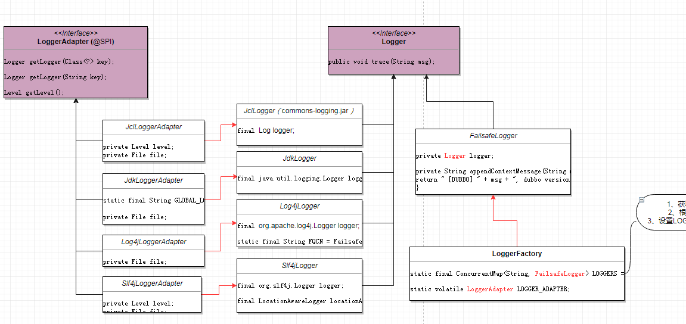

本文主要分析Dubbo是如何封装常用的日志框架的，以及在Dubbo中如何使用日志。
在com.alibaba.dubbo.common.logger包中定义了如下几个和日志相关的类和接口：
- Level枚举类
- Logger接口
- LoggerAdapter接口
- LoggerFactory类
Level枚举类
该枚举类从低到高定义了如下几个日志级别：1
ALL,TRACE,DEBUG,INFO,WARN,ERROR,OFF
Logger接口
该接口定义了一些输出相应级别日志的方法，如：1
2
3
4
5
6
7
8
9public interface Logger {
//输出debug级别日志
public void debug(Throwable e);
public void debug(String msg, Throwable e);
public boolean isDebugEnabled();
//省略其他类似方法
...
}
LoggerAdapter接口
该接口为Logger提供者，定义了获取Logger、设置level级别、设置logger文件等方法,SPI注解我们后面的章节会详细介绍:1
2
3
4
5
6
7
8
9
10
11
12
13
14
15
public interface LoggerAdapter{
//获取Logger
Logger getLogger(Class<?> key);
//获取Logger
Logger getLogger(String key);
//获取当前logger日志级别
Level getLevel();
//设置当前logger级别
void setLevel(Level level);
//获取当前logger文件
File getFile();
//设置当前logger文件
void setFile(File file);
}
JdkLogger/JdkLoggerAdapter例子
如果需要将日志框架集成到Dubbo中，需要实现上面定义的Logger接口和LoggerAdapter接口。
Dubbo默认已经集成了commons-logging、java.util.logging.Logger、org.apache.log4j.Logger、org.slf4j.Logger。
作为例子，我们看下jdkLogger，其他的都类似。1
2
3
4
5
6
7
8
9
10
11
12
13
14
15
16
17
18
19
20
21
22
23
24
25
26
27
28
29
30
31
32
33
34
35
36
37
38
39
40
41
42
43
44
45
46
47
48
49
50
51
52
53
54
55
56
57
58
59
60
61
62
63
64
65
66
67
68
69
70
71
72
73
74
75
76
77
78
79
80
81
82
83
84
85
86
87
88
89
90
91
92
93
94
95
96
97
98
99
100
101
102
103
104//JdkLogger实现了Dubbo框架定义的Logger接口
public class JdkLogger implements Logger {
//持有java.util.logging.Logger实例
private final java.util.logging.Logger logger;
public JdkLogger(java.util.logging.Logger logger) {
//构造方法，设置logger实例
this.logger = logger;
}
//实现了Logger接口中定义的方法
//都是委托给了java.util.logging.Logger实例来打印相应级别的日志
public void info(String msg, Throwable e) {
logger.log(Level.INFO, msg, e);
}
public boolean isInfoEnabled() {
return logger.isLoggable(Level.INFO);
}
//省略其他类似方法
...
}
//JdkLoggerAdapter实现了Dubbo框架定义的LoggerAdapter接口
public class JdkLoggerAdapter implements LoggerAdapter {
//全局日志名称
private static final String GLOBAL_LOGGER_NAME = "global";
//存放日志的文件
private File file;
//该构造方法读取jdk日志配置文件logging.properties，设置日志文件file
public JdkLoggerAdapter() {
try {
//获取jdk日志配置文件logging.properties
InputStream in = Thread.currentThread()
.getContextClassLoader()
.getResourceAsStream("logging.properties");
if (in != null) {
//读取配置
LogManager.getLogManager().readConfiguration(in);
} else {
//在classpath中没找到jdk日志配置文件logging.properties
System.err.println("No such logging.properties in classpath for jdk logging config!");
}
} catch (Throwable t) {
System.err.println("Failed to load logging.properties in classpath for jdk logging config, cause: " + t.getMessage());
}
try {
//获取与此Logger关联的Handlers
Handler[] handlers =
java.util.logging.Logger.getLogger(GLOBAL_LOGGER_NAME)
.getHandlers();
for (Handler handler : handlers) {
if (handler instanceof FileHandler) {
FileHandler fileHandler = (FileHandler) handler;
//通过反射找到files字段
Field field = fileHandler.getClass().getField("files");
//获取fileHandler对象的field字段的值
File[] files = (File[]) field.get(fileHandler);
if (files != null && files.length > 0) {
//设置file，即日志文件
file = files[0];
}
}
}
} catch (Throwable t) {
}
}
//getLogger方法，返回一个JdkLogger对象，构造JdkLogger对象时传入了java.util.logging.Logger的Logger
public Logger getLogger(Class<?> key) {
//将最终使用的日志框架包装成了Dubbo的Logger对象
return new JdkLogger(java.util.logging.Logger.getLogger(key == null ? "" : key.getName()));
}
//返回日志文件
public File getFile() {
return file;
}
//获取日志级别
public Level getLevel() {
//这里通过fromJdkLevel方法将jdk的logger级别转换成了dubbo定义的level级别
return fromJdkLevel(java.util.logging.Logger.getLogger(GLOBAL_LOGGER_NAME).getLevel());
}
//设置日志级别
public void setLevel(Level level) {
//这里通过toJdkLevel方法将dubbo定义的level级别转换成了jdk的logger级别
java.util.logging.Logger.getLogger(GLOBAL_LOGGER_NAME).setLevel(toJdkLevel(level));
}
//fromJdkLevel和toJdkLevel方法比较简单，这里就不列出来了
}
LoggerFactory类
该类是Logger工厂，定义了获取Logger的静态方法，需要使用日志时都是直接操作该类拿到Logger。
LOGGERS和LOGGER_ADAPTER静态变量后面会介绍。1
2
3
4
5
6
7
8
9public class LoggerFactory {
//缓存已创建Logger的类<类名称，该类对应的Logger>
private static final ConcurrentMap<String, FailsafeLogger> LOGGERS =
new ConcurrentHashMap<String, FailsafeLogger>();
//当前使用的日志框架
private static volatile LoggerAdapter LOGGER_ADAPTER;
}
例如在ScriptRouter类中，可以这样使用:1
2
3
4
5
6public class ScriptRouter{
private static final Logger logger = LoggerFactory.getLogger(ScriptRouter.class);
public void error(){
logger.debug("route error , rule has been ignored");
}
}
接下来，我们看下LoggerFactory中的getLogger方法定义：1
2
3
4
5
6
7
8
9
10public static Logger getLogger(Class<?> key) {
//根据name从LOGGERS缓存中获取FailsafeLogger
FailsafeLogger logger = LOGGERS.get(key.getName());
if (logger == null) {
//如果logger为空，则为类key创建一个FailsafeLogger，并放入缓存LOGGERS
LOGGERS.putIfAbsent(key.getName(), new FailsafeLogger(LOGGER_ADAPTER.getLogger(key)));
logger = LOGGERS.get(key.getName());
}
return logger;
}
获取Logger时，我们是从LOGGERS变量中获取的，可见LOGGERS是用来缓存我们已创建的Logger对象的。
而创建FailsafeLogger对象时，我们是根据key从LOGGER_ADAPTER变量中获取的Logger。
由此可知，我们是通过LOGGER_ADAPTER变量(即LoggerAdapter接口)的getLogger(key)方法获取到了最终使用的日志框架，然后包装成了FailsafeLogger变量缓存起来。
我们先来大概看下FailsafeLogger类的定义，然后在看下LOGGER_ADAPTER变量是在何时被赋值的。1
2
3
4
5
6
7
8
9
10
11
12
13
14
15
16
17
18
19
20
21
22
23
24
25
26
27
28
29
30
31
32
33
34
35public class FailsafeLogger implements Logger{
//包含了最终日志框架的logger
private Logger logger;
public FailsafeLogger(Logger logger) {
this.logger = logger;
}
//在日志信息上附加dubbo上下文信息，如：dubbo版本、主机地址
private String appendContextMessage(String msg) {
return " [DUBBO] " + msg + ", dubbo version: " + Version.getVersion() + ", current host: " + NetUtils.getLocalHost();
}
public void info(String msg) {
try {
//输出附加了上下文信息的日志
logger.info(appendContextMessage(msg));
} catch (Throwable t) {
}
}
public boolean isInfoEnabled() {
try {
return logger.isInfoEnabled();
} catch (Throwable t) {
return false;
}
}
//省略其他类似方法
...
}
我们在来看下LOGGER_ADAPTER变量是如何被赋值的，实际上，在LoggerFactory类初始化时，便会试着设置当前使用的日志框架：1
2
3
4
5
6
7
8
9
10
11
12
13
14
15
16
17
18
19
20
21
22
23
24
25
26
27
28
29
30
31
32
33
34
35
36
37
38
39
40
41
42
43
44
45
46
47
48
49
50
51
52
53
54
55
56
57
58
59
60
61
62static {
//从JVM系统属性中获取配置的日志框架，即通过：java -Ddubbo.application.logger=slf4j配置
String logger = System.getProperty("dubbo.application.logger");
if ("slf4j".equals(logger)) {
//如果是slf4j，则设置当前使用的日志框架为Slf4jLoggerAdapter
setLoggerAdapter(new Slf4jLoggerAdapter());
} else if ("jcl".equals(logger)) {
setLoggerAdapter(new JclLoggerAdapter());
} else if ("log4j".equals(logger)) {
setLoggerAdapter(new Log4jLoggerAdapter());
} else if ("jdk".equals(logger)) {
setLoggerAdapter(new JdkLoggerAdapter());
} else {
//如果没有匹配到，则挨个尝试可用的日志框架
try {
setLoggerAdapter(new Log4jLoggerAdapter());
} catch (Throwable e1) {
try {
setLoggerAdapter(new Slf4jLoggerAdapter());
} catch (Throwable e2) {
try {
setLoggerAdapter(new JclLoggerAdapter());
} catch (Throwable e3) {
setLoggerAdapter(new JdkLoggerAdapter());
}
}
}
}
}
//设置并修改当前使用的LoggerAdapter
public static void setLoggerAdapter(LoggerAdapter loggerAdapter) {
if (loggerAdapter != null) {
//首先获取LoggerFactory类的Logger
Logger logger = loggerAdapter.getLogger(LoggerFactory.class.getName());
//然后输出即将使用的logger：loggerAdapter
logger.info("using logger: " + loggerAdapter.getClass().getName());
//设置LOGGER_ADAPTER变量为loggerAdapter
LoggerFactory.LOGGER_ADAPTER = loggerAdapter;
//遍历已创建logger的类列表，然后修改logger为新设置的loggerAdapter
for (Map.Entry<String, FailsafeLogger> entry : LOGGERS.entrySet()) {
//设置FailsafeLogger的logger为loggerAdapter创建的logger
entry.getValue().setLogger(LOGGER_ADAPTER.getLogger(entry.getKey()));
}
}
}
//获取当前日志级别
public static Level getLevel() {
//返回LOGGER_ADAPTER的日志级别
return LOGGER_ADAPTER.getLevel();
}
//设置当前日志级别
public static void setLevel(Level level) {
LOGGER_ADAPTER.setLevel(level);
}
//获取当前日志文件
public static File getFile() {
return LOGGER_ADAPTER.getFile();
}
到此，我们就介绍完Dubbo-Logger相关的内容了，Dubbo作为常用的中间件，集成了可选的日志框架，是非常值得我们学习，最后，给一个类图加深下理解。
